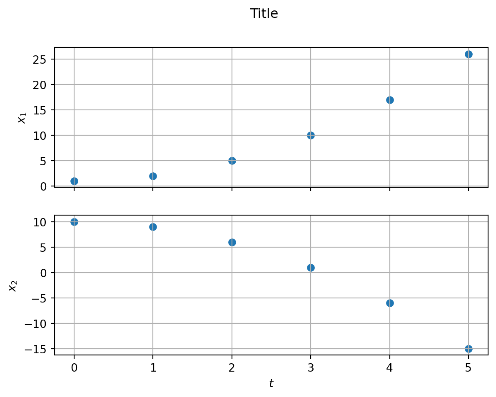

import numpy as np
import matplotlib.pyplot as pltMatplotlib
There are a variety of Python libraries to visualise data. We are going to have a look at the most popular option matplotlib (https://matplotlib.org/).
Import Libraries
Graph of a function
In order to graph a function, we have to define values for the horizontal axis.
x = np.linspace(-2*np.pi, 2*np.pi, 1000) # Generate 1000 points from -2π to 2π
f = np.cos(x) # Calculate cos(x) for each x
g = np.sin(x) # Calculate sin(x) for each x
fig, ax = plt.subplots(figsize=(8, 6)) # Define figure and axis, set size
ax.plot(x, f, label=r'$f(x) = \cos(x)$', color='blue') # Plot f(x)
ax.plot(x, g, label=r'$g(x) = \sin(x)$', color='orange') # Plot g(x)
ax.axhline(0, color='black', lw=0.5, ls='--') # Horizontal line at y=0
ax.axvline(0, color='black', lw=0.5, ls='--') # Vertical line at x=0
ax.set_xlabel('x') # Set x-axis label
ax.set_ylabel('$f(x)$, $g(x)$') # Set y-axis label
ax.set_title(r'Graph of $\cos(x)$ and $\sin(x)$') # Set title
ax.grid(True) # Show grid
ax.legend() # Show legend
plt.show() # Display the plotGraph data
Data points can be graphed using lists or arrays containing the x and y coordinates.
t = [0.0, 0.5, 1.0, 1.5, 2.0, 2.5] # Example time points
x = [1.3, 2.8, 3.4, 4.1, 4.5, 4.7] # Example position points
fig, ax = plt.subplots(figsize=(8, 6)) # Define figure and axis, set size
# Scatter plot of measured data
ax.scatter(t, x, label='measured data', color='blue', s=10)
ax.set_xlabel('time (s)')
ax.set_ylabel('position (m)')
ax.grid(True) # Show grid
plt.show() # Display the plotArrays of plots
Several plots can be arranged in a gridlike array. This is especially useful if two plots have the same x or y axis.
t = [0, 1, 2, 3, 4, 5]
x1 = [1, 2, 5, 10, 17, 26]
x2 = [10, 9, 6, 1, -6, -15]
# set up figure
# 2 rows, 1 column, shared x axis
fig, (ax1, ax2) = plt.subplots(nrows=2, ncols=1, sharex=True)
plt.suptitle('Title') # title for whole figure
plt.xlabel('$t$') # label for common x axis
# set up plot 1
ax1.scatter(t, x1)
ax1.set_ylabel(r'$x_1$')
ax1.grid(True)
# set up plot 2
ax2.scatter(t, x2)
ax2.set_ylabel(r'$x_2$')
ax2.grid(True)
plt.show()
Error bars
When plotting measured data, it is good practice to add error bars to the data points to indicate the uncertainty of the measured values. This can be done using the plt.errorbar() method.
Visualise data and model
t = [0.0, 0.5, 1.0, 1.5, 2.0, 2.5] # Example time points
dt = 0.05 # Example time error (same for all points)
x = [1.3, 2.8, 3.4, 4.1, 4.5, 4.7] # Example position points
dx = [0.05, 0.05, 0.10, 0.10, 0.15, 0.15] # Example position errors
fig, ax = plt.subplots(figsize=(8, 6)) # Define figure and axis, set size
# Scatter plot with error bars
ax.errorbar(t, x, xerr=dt, yerr=dx,
label='measured data',
fmt='.',
color='blue'
)
ax.set_xlabel('time (s)')
ax.set_ylabel('position (m)')
ax.grid(True)
plt.show()